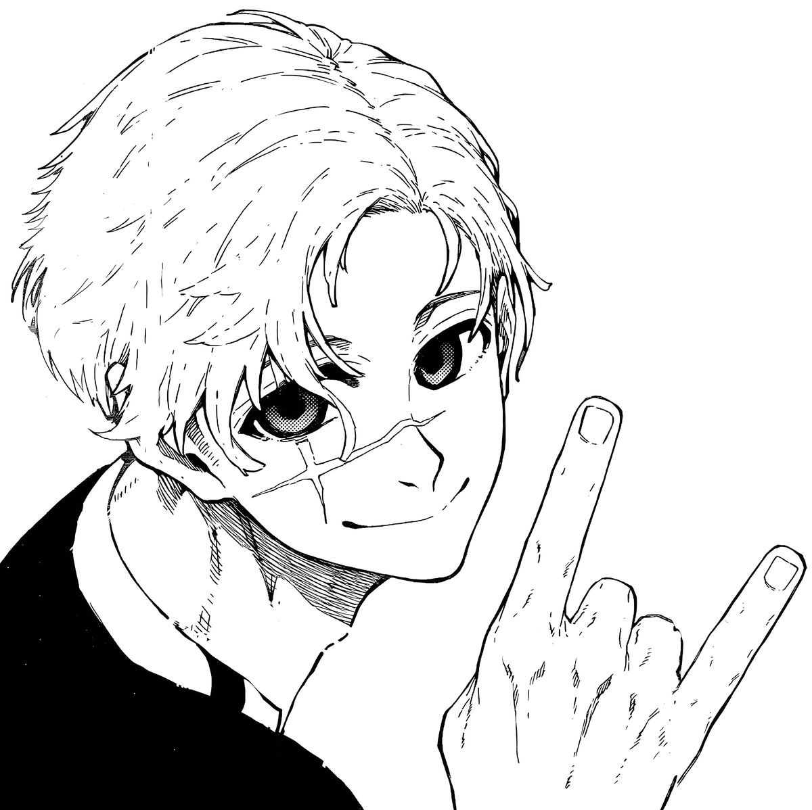
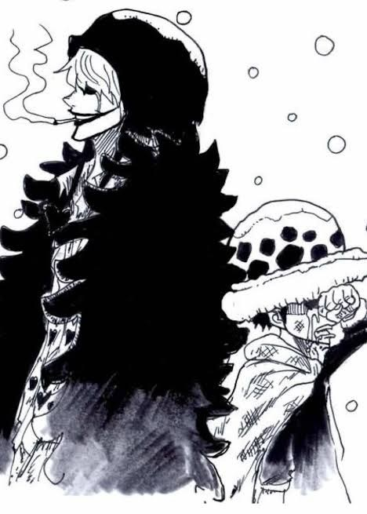
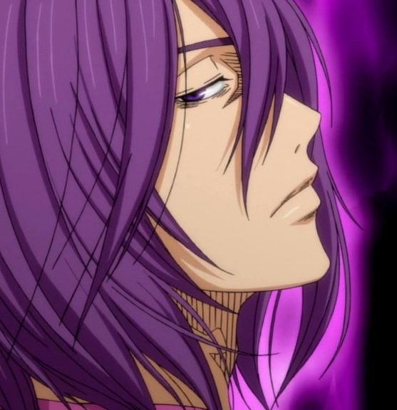
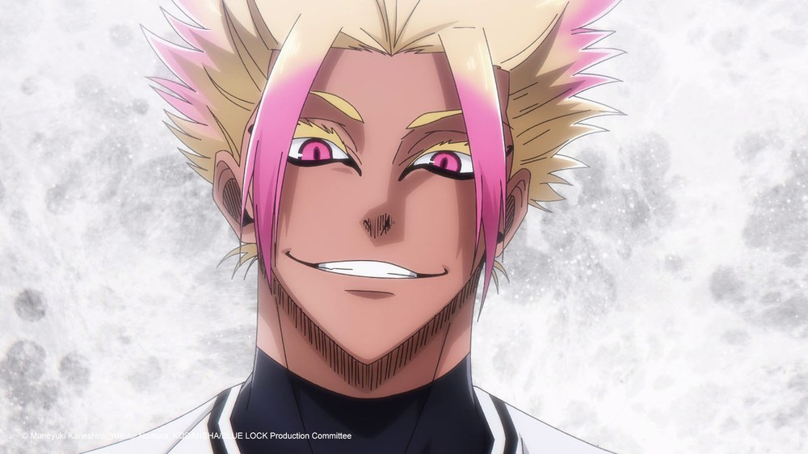
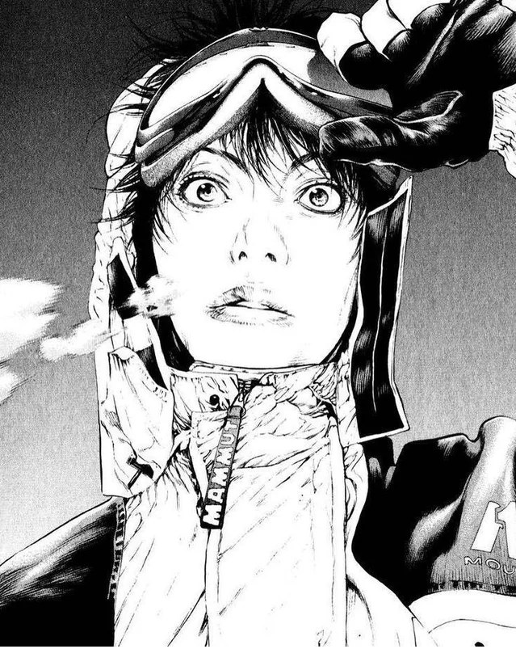

Seinen
Seinen
El soldado más fuerte
Un corte de pelo, una mirada y la certeza de que la humanidad aún puede morder. Levi no grita: decide.
Attack on Titan · 2009
5 min
Paneles que detuvieron el tiempo
Una colección curada de viñetas que redefinieron el lenguaje del manga. Tinta, silencio y velocidad: el fotograma que nunca se mueve y aun así lo dice todo.



Panel de la semana
Shonen · DramaHay personajes que se despiden sonriendo para que el otro pueda seguir. Corazón convierte su despedida en una lección de silencio: el mundo se apaga y la sonrisa se queda.
Lo que hace icónico a este panel no es el dibujo: es la pausa. La silueta de Law y esa sonrisa que parece decir todo lo que el diálogo no puede.
«Hay sonrisas que se heredan como una promesa.»
Imagen de la obra original. Uso educativo, sin fines comerciales.
Colección permanente
Nueve viñetas, nueve formas de detener el tiempo. Filtra por género o recorre la colección completa: cada pieza se lee en menos de lo que tarda en pasar un tren.
Seinen
Un corte de pelo, una mirada y la certeza de que la humanidad aún puede morder. Levi no grita: decide.
 Deportes
Deportes
El ring desaparece y solo queda el ángulo del puño. El deporte se convierte en física emocional.

DeportesTres metros de indiferencia y, de pronto, el aro entero desaparece bajo su mano. La escala como sentencia.
 Deportes
Deportes
Nagi no corre: espera a que el balón entienda su geometría. El talento como forma de pereza.

DeportesNo hay plan, solo impulso. Shidou convierte el área en un laboratorio de riesgos imposibles.
 Shonen
Shonen
El primer hombre contra un dios. La sonrisa de Adán no es arrogancia: es memoria de todo lo que vino después.
 Ciencia ficción
Ciencia ficción
Un inventor frente a la divinidad. La electricidad como lenguaje y el futuro como último argumento.
 Sobrenatural
Sobrenatural
Sonríe como quien ya conoce el final. Mudano enseña que el poder también se hereda en la mirada.

SeinenMori no escala para llegar a la cima: escala para desaparecer. La soledad como única vía y la roca como espejo.
Línea de tinta
Un recorrido breve por los momentos que cambiaron la forma de dibujar el tiempo. No es una historia completa: es un mapa de influencias.
1968.
Tezuka y la viñeta cinematográfica: el encuadre aprende a moverse.
1989.
Hajime no Ippo convierte el deporte en combate psicológico y el sudor en tinta.
1997.
One Piece demuestra que el viaje puede ser la estructura y la amistad el motor.
2009.
Attack on Titan convierte la escala en amenaza y el silencio en terror.
2018.
Blue Lock transforma el ego en motor narrativo: el talento también se grita.
2026.
Nuevas voces reinterpretan el lenguaje: menos tinta, más intención.
Cómo curamos
No elegimos los paneles más famosos. Elegimos los que siguen funcionando cuando los sacas de su página y los miras solo.
Revisamos la obra completa, no solo la viñeta. El contexto es parte del encuadre: sin él, el gesto se queda en dibujo.
Buscamos el panel que puede explicarse sin diálogo. Si funciona solo, entra. Si necesita una novela al lado, no es un panel: es una página.
Analizamos composición, tinta y ritmo. Citamos la obra, el autor y el contexto. Las imágenes se usan con fines educativos y pertenecen a sus creadores.